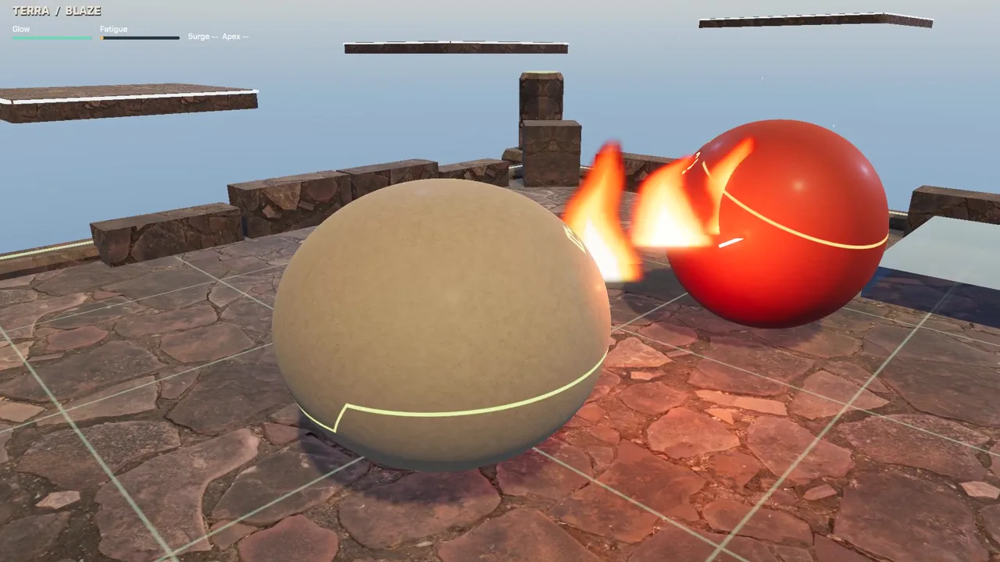
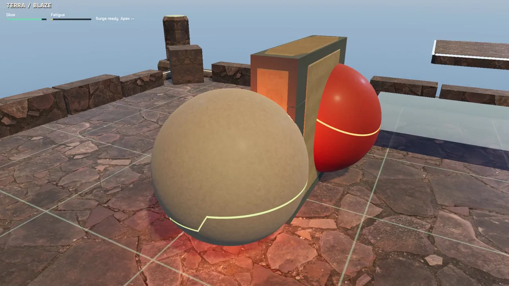

Back on the stone court
TERRA and BLAZE are back on a textured stone court, with a closer third-person camera, a brighter Box sky and a smaller control bar. Their solid shells, single coloured seams and small glowing eyes now appear in the ordinary game. The scene is still rough: fire can hide the fighters, the camera crowds them at close range, and the distant squares need more depth and atmosphere.
The twenty-second clip below runs the ordinary controls against the game's opponent. It is an offline input replay rendered at a fixed 30 frames per second, with no audio. That recording rate is not a claim about live performance. A separate 1080p play measurement reached about 17 frames per second, with a median frame time of 44.8 ms and a 95th percentile of 124.6 ms. Recent runs have varied from roughly 17 to 23 frames per second. The 60 fps target remains unmet.
This pass removes unnecessary stopped-movement requests, skips hidden preview calculations and adds performance, balanced and high rendering presets. The default performance preset keeps full output resolution and directional shadows while disabling the expensive global illumination, ambient occlusion and volumetric fog. Simple shadow casters retain the visible orb surfaces. These changes improve the earlier slow baseline, but frame spikes and GPU cost still need work.
The stone wall now uses a short rising motion and breaks into pieces before a small dust tail. Damaging contacts stop simulation for at least four ticks, and brief squash and camera cues respond to those contacts. The motion review still found weak anticipation and recoil, a floating wall rise and an unconvincing breakup. These cues need more work to read clearly during play.
The second clip is a dated week-so-far montage: an earlier low-resolution input replay followed by this new court capture. Both clips are development footage. Collision overlap, abrupt effect transitions and incomplete combat feedback are visible; a full match, persistence check and playable release remain ahead.
Inside the work

